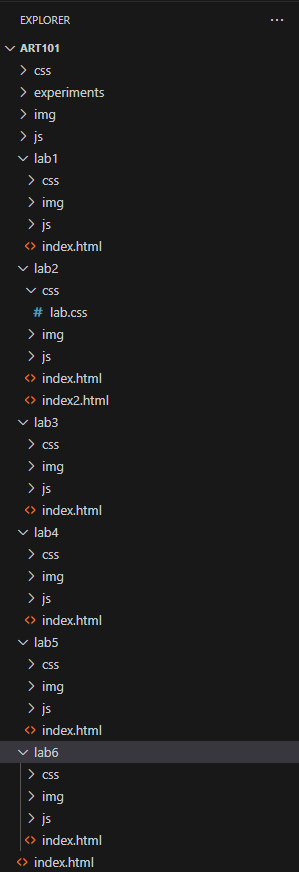

Lab 3 - File Structure and File Transfer
Subject
Through Lab 3, we created a local file structure on our computers with new index.html files, then opened them in a live server.
Challenge
When I was formatting the images on my webpage, the image keeps turning out to be too big and I had to scroll to see other parts of the image. At first I could not figure it out but my partner, Sophie, found that we had "class" instead of "id," and changing it to the latter got the sizing to work.
Problems
I was unsure about how to do the links and bullet points at the bottom of the webpage at first, so I had to consult my partner and compare our codes until I figured it out. It was definitely a process but now I know how.
Reflection
After Lab 2, I was able to explore a little more with HTML and CSS since I am not as unfamiliar as last time. This led to more experimentation and trials & error, but it turned out pretty fun. Especially when the images in my webpage turned out gigantic at first---that was pretty hilarious.
Results
Here is the result. You are looking at it right now. Hope you enjoy!
